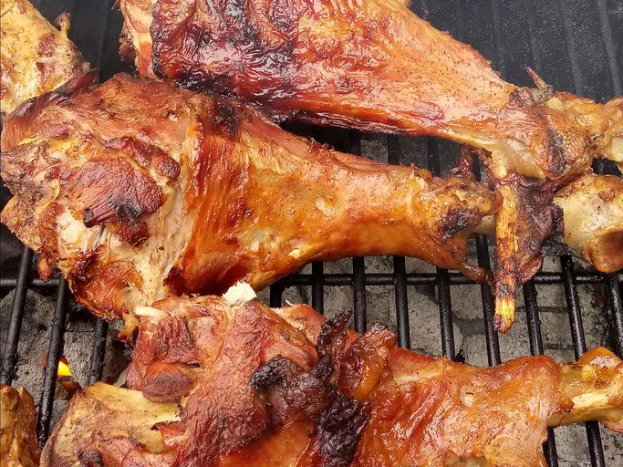

Grilled Turkey Legs

Delicous tender legs made with love.
One memory that has always stuck in my brain growing up, was the first time I was able to go to the renaissance fair. The food booths pumped the air with sweet and savory smells and every where you looked you could see someone eating a giant monster of a turkey leg.
While this turkey legs may not be as big as those giants they had at the fair. these pack just as much flavor and are just as tender if not more than what you can get at your local fair. Certain to be a crowd pleaser that everyone wont be able to stop talking about!
Ingredients
- 1 2-liter bottle of lemon lime flavored carbonated beverage
- 2 tablespoons of sugar
- 2 tablespoons of hot sauce
- 1 tablespoon crushed red pepper flakes
- 1 tablespoon black pepper
- 1 large sweet onion
- 4 turkey legs
- 2 tablespoons honey
- 1 tablespoon steak seasoning
Directions
- Preheat an outdoor grill for high heat, oil grates
- In a large pot, mix the lemon-lime flavored carbonated beverage, sugar, hot sauce, red pepper, pepper, and onion. Place the turkey legs in the mixture, and bring to a boil. Cook 30 to 45 minutes, until the turkey has reached an internal temperature of 180 degrees F (80 degrees C).
- Remove onion slices from the mixture, and arrange on the prepared grill. Place turkey legs over the onions. Drizzle with honey, and season with steak seasoning. Cook, tuning once, 20 minutes, or until a crisp browned crust has formed on the turkey legs.